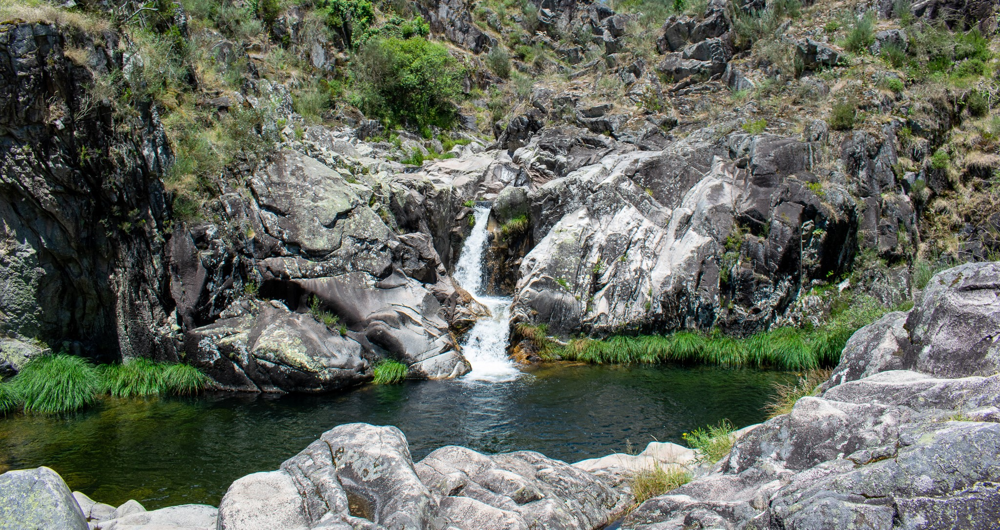

CASCATAS DE
PORTUGAL
Sobre
Webmap
FAQ
Contactos

Explore as belas cascatas naturais
que compõem as paisagens do nosso país
Dispomos de um Mapa Interativo/
WebSIG com os dados das cascatas
recolhidas
Explorar!
Possibilitamos a pesquisa das cascatas
recolhidas através da nossa base de dados
Explorar!